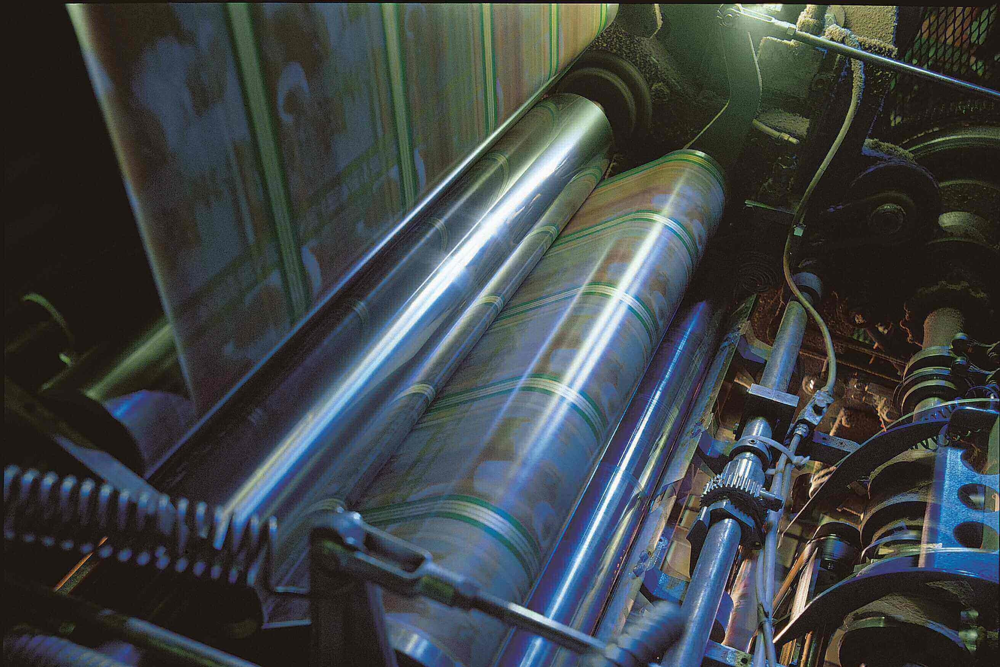

SERVICES
To increase the efficiency of your plant
Op-tec offer a complete range of project engineering and consultancy services to the process and manufacturing industries. With experience and competency in technical consultancy, system design, application programming, systems integration and project management, we provide a total solution - from initial concept through installation and commissioning, to continuing on-site support.
We have become a key engineering partner to smaller manufacturers, where an in-house control systems resource is not cost effective. In these cases our customer benefits from having trained and experienced control systems experts available, without the overhead costs associated with full-time personnel.

When implementing upgrades and expansions to existing systems, Op-tec’s engineers adapt their programming style to match the existing configuration for ease of maintenance and support.
A flexible and personalised service helps to ensure a clear understanding of the project requirements, including addressing the clients' wider business needs.
With todays increasingly connected industrial automation systems, remote assistance and support is not just increasingly possible, but reliable and secure. Where opportunities exist to work in this manner we will highlight these, while respecting requests to work locally should your company procedures require it.
Op-tec has broad systems engineering capabilities and proven track record in delivering innovative solutions that meet and often exceed expectations. We have the capability to deliver at any scale, from small additions and upgrades to existing installations, through to full turnkey projects, taking responsibility for system design and performance.
Listed are industrial automation vendors whose products we have previous experience with.

Distributed Control Systems (DCS):
- ABB (Bailey) - System 800xA, Freelance, INFI 90
- Emerson (Rosemount) - DeltaV, RS3
- Schneider - Eurotherm Suite
- Siemens - APACS, PCS7, TIA
Supervisory Control and Data Acquisition (SCADA) systems
and Programmable Logic Controllers (PLC):
- ABB - Compact, AC 800M, AC 900F, AC 800F, AC 700F, AC500
- GE - iFIX, CIMPLICITY, PAC8000, PACSystems RX3i
- Mitsubishi - MELSEC
- Robosoft
- Rockwell / Allen-Bradley - PLC-5, SLC 500, ControlLogix
- Schneider / Eurotherm - T2750, T2550
- Siemens - S7, S5
We offer a broad portfolio of services to support your projects, ensuring resources are used efficiently to gain the most from the technology and expertise you have invested in.
Our engineers have a wealth of expereince and access to insights from our clients in other industries making them valuable team members during your improvement project.
Specialities:
- Obsolescence planning
- HMI design and operator effectiveness
- Alarm Management
- System design and feasibility studies
- Control loop tuning/optimisation
- Fieldbus/smart device integration and asset management
- 3rd party system/package integration

Our engineers' technical expertise and process knowledge makes us perfectly equipped to provide operational support through predictive, preventative and responsive maintenance activities.
Our services allow owners of industrial automation systems to maintain and improve the efficiency and output of their processes.
Typical service activities:
- Engineer call-out
- Routine maintenance
- Staged system upgrades
- Patching and security updates
- Configuration of asset management systems


The majority of control systems now run on standard PC hardware and MS Windows operating systems. While this provides many benefits (widely available support and spares, familiar interface for users) it does mean use of hardware and software designed for non-industrial applications.
To ensure your system can be bought back should the worst happen, we offer the following services:
- Review of current procedures
- File verification
- Secure off-site file storage
- Remote backup management
That said, we at Op-tec know only too well that many sites are still running older systems using the OEM's workstations and operating systems. In these cases an audit of current practises is recommended, to include a validation of exisiting backups.